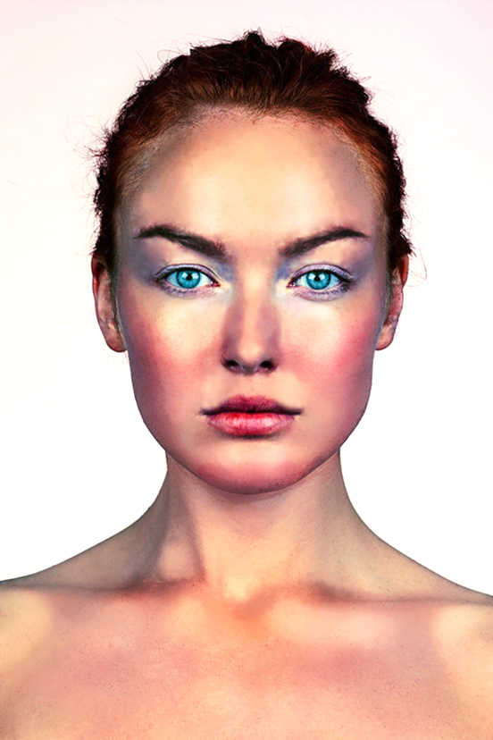
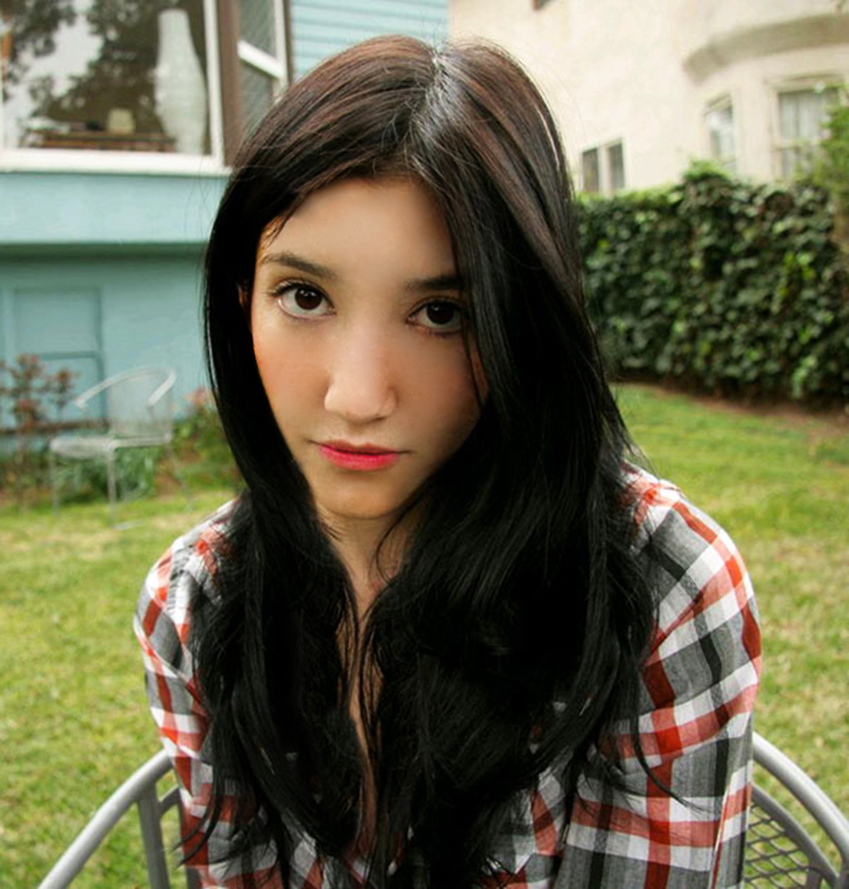

Vježba 1
U prvoj vježbi zadatak je bio pomoću FontForge-a napraviti vlastiti font, ali samo za slova svojega imena i pretimena te za znakove hrvatske abecade.
Vježba 2
U drugoj vježbi učitali smo font iz prethodne vježbe u Adobe Illustratoru. Uzeli smo svoje inicijale te ih ispisali preko obojanih krivulja poravnatim u mreži koordinatnog sustava.
Vježba 3
U trećoj vježbi smo pomoću Pen alata napravili dva cvijeta. Nacrtali bi jedan elemen i onda ga duplicirali onoliko puta koliko nam treba, a objekte smo mijenjali pomoću alata rotate i scale. Elemente smo bojali pomoću boja koje su dodali u swatch.
Vježba 4
U četvrtoj vježbi smo obrađivali temu izrade složenih objekata koji se sastoje od više staza metodama spajanja i oduzimanja oblika. Elementi zadataka koje smo koristili su:
• složeni objekti koji se sastoje od više zatvorenih staza (krivulja)
• dodavanje, oduzimanje staza postojećim objektima
• linearni i radijalni gradijent
• "mesh" gradijent
Projektni zadatak 1
U prvom projektnom zadatku sjedinili smo sve elemente obrađene unutar prethodne četiri vježbe vezane uz vektorsku grafiku. Tema je bila vezana uz priprodu i pejzaž, a zadatak se odrađivao u Adobe Illustratoru. Elementi koji su bili potrebni za projektni zadatak su:
• slovni znakovi (min 3)
• objekti zadani temom
• samostalne krivulje umnožene alatom Blend
• maskiranje
• transformacija objekata
• definiranje swatch boja
• linearni i radijalni gradijent
• mash
• transparencija
Original


Uređeno u PS-u


Vježba 5
U petoj smo vježbi tehnikom digitalnog retuširanja izbrisali neželjene dijelove. Pomoću alata za selekciju Lasso smo označili dijelove koje smo htjeli ukloniti te smo ih, koristeći se alatima za zamućivanjem (Dust i Scratches, Median) kloniranje (Clone Stamp, Heal) i kopiranje selekcije u layere, uklonili. Za što realističniju sliku koristili smo lokalne i globalne korekcije boja (Burn/Dodge brush, Levels, Brightness/Contrast).
Vježba 6
U šestoj vježbi smo koristeći se tehnikom neinvazivnog koloriranja slike crno-bijeloj slici dali boju i slici u boji promijenili nijansu određenih područja. Sleketirali smo dijelove kojima želimo dodijeliti određenu boju i napravili masku koju smo spremili u channels. Boju se stavili na zaseban sloj (layer) kako ne bismo uništili originalnu sliku i kako bismo mogli lakše napraviti promjene u kasnijim fazama obrade slike.
Vježba 7
U sedmoj vježbi smo radili fotomontažu. Glavni cilj fotomontaže je kombiniranje više fotografija izrezivanjem dijelova različitih slika i spajanjem u jednu cjelinu. Najvažnije je napravili dobru selekciju predemta te ih, koristeći alate za korekciju boje i tonova, što bolje uklopiti u sliku. U ovoj vježbi smo također izđivali sjenu na predmetima koje smo uveli u sliku kako bi dodali na realističnosti slike.
Projektni zadatak 2
U drugom projektnom zadatku radimo fotomontažu u Adobe Photoshopu koristeći se zadanim fotografijama te fotografijama koje smo sami pronašli na internetu. Potrebno je koristiti sljedeće:
• alati za retuširanje
• alati za selekcije
• alati za transformacije
• tehnike koloriranja
• maske (layer mask)
• lokalne i globalne korekcije boja
• sjene i transparencija

Vježba 8
U osmoj vježbi smo izrađivali kinematograf. Kimenatogarf je video isječak čija se sekvenca ponavlja u beskonačnost, najčešće u GIF formatu, a u kompoziciji spaja pokretnu i statičnu grafiku (sliku i video). U vježbi smo prvo sliku pripremili u Photoshopu tako da smo izbrisali dio slike koji će biti poretan te takvu sliku (.png) uveli u Premiere gdje smo napravili kinematograf.
Vježba 9
U devetoj vježbi zadatak je bio napravili video isječak koristeći se datim video materijalima. Video isejčak je trebao sadržavati:
• rezanje i spajanje video isječaka iz više izvora
• video efekti
• brisanje i dodavanje zvuka
• dodavanje i obrada teksta
Vježba 10
U desetoj vježbi zadatak je izaditi web stranicu. Web stranice se kreiraju pomoću HTML jezika, kojim definiramo tip sadržaja koji želimo prikazati. Stiliziranje sadržaja se definira jezikom CSS kojim određujemo veličine, pozicije, boje i druge stilske karakteristike sadržaja. Naš je zadatak bio napravili i stilizirati dvije stranice.
Vježba 11
U jedanaestoj vježbi zadatak je krenirati račun na nekom webhostu gdje treba postaviti sadržaj naših stranica koji je hijerarhijski rapoređen u različite razine. Taj sadržaj potrebno je međusobno povezati na stranicama.